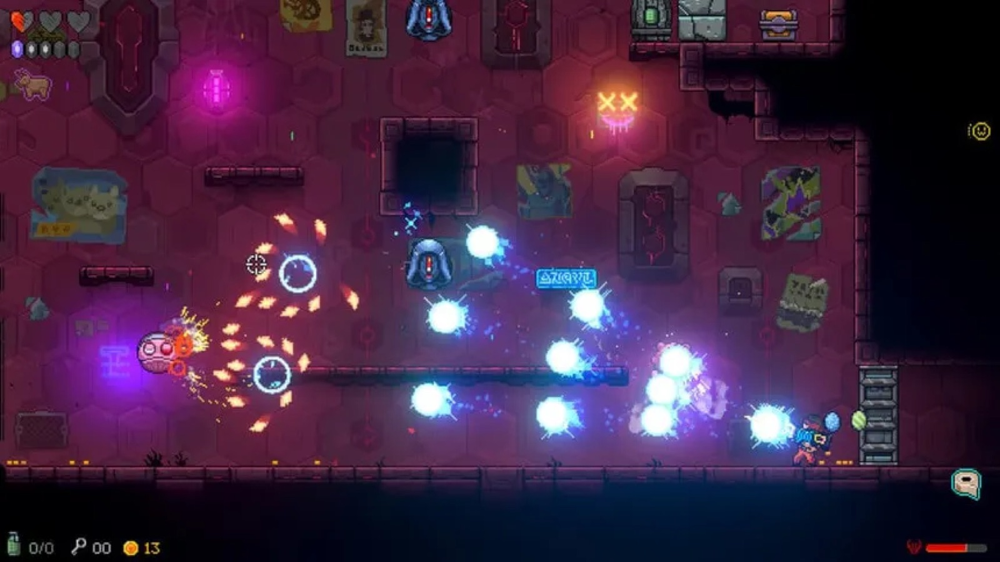

Nuevo tráiler de Neon Abyss: Echoes
28 de septiembre de 2026 - Por modem

Ya puedes descubrir el nuevo tráiler de Neon Abyss: Echoes. Un adelanto de las nuevas zonas, desafíos y sorpresas que te esperan en esta nueva aventura.
Presentamos el nuevo tráiler
Después de varias semanas de trabajo, nos alegra compartir por fin el primer tráiler de Neon Abyss: Echoes. En este adelanto podéis descubrir nuevas zonas, enemigos y algunos de los desafíos que encontraréis durante la aventura.

Una nueva aventura
Neon Abyss: Echoes amplía el universo del juego con nuevos escenarios y encuentros que pondrán a prueba las habilidades de los jugadores. Seguimos trabajando para pulir cada detalle y ofrecer una experiencia llena de acción, exploración y sorpresas.